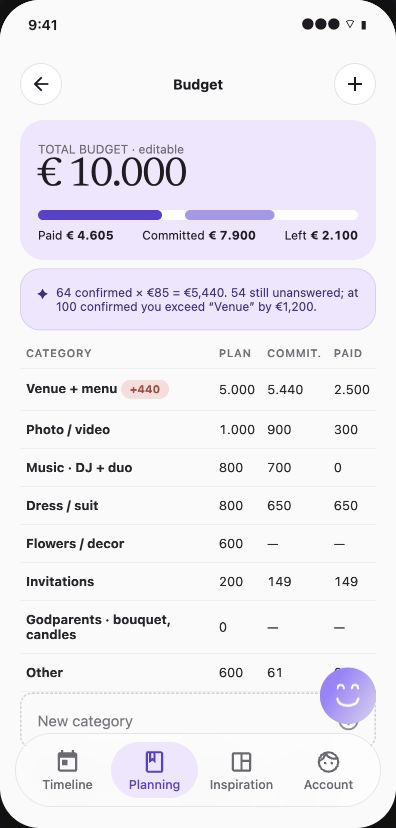
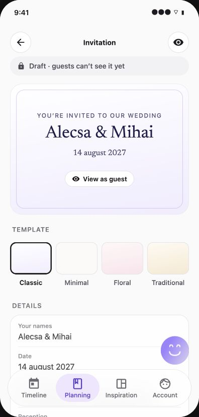
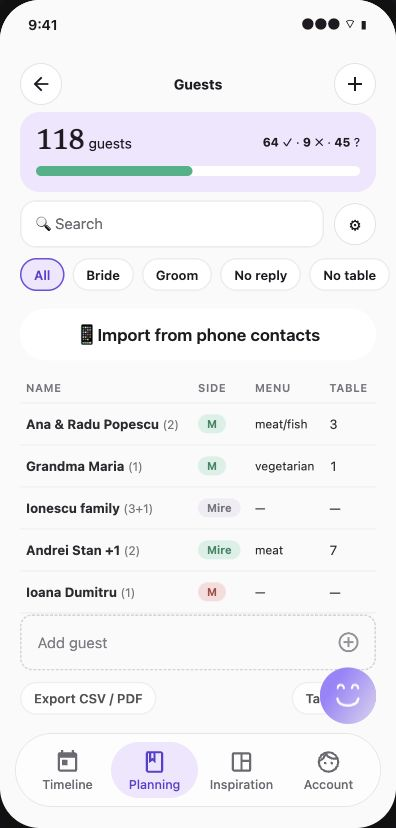
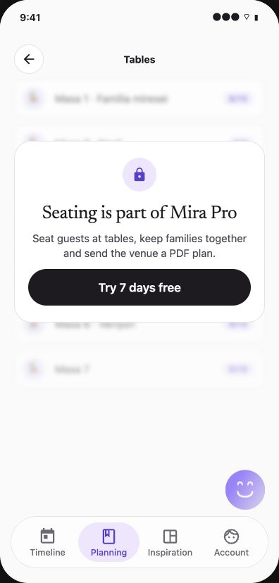
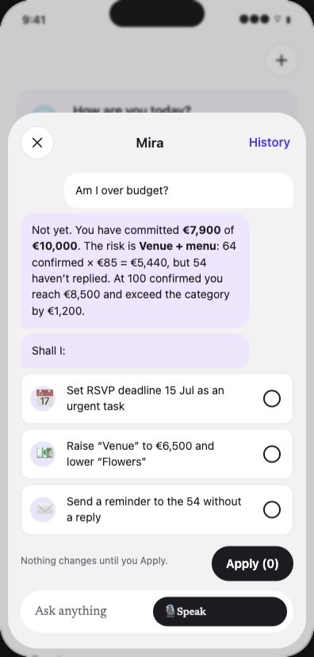
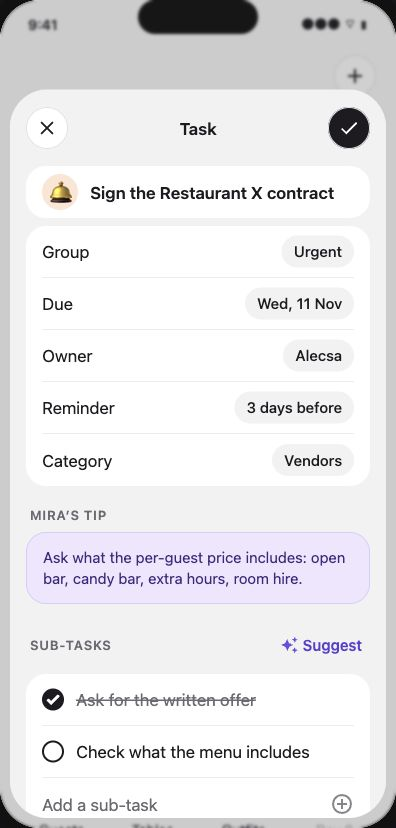
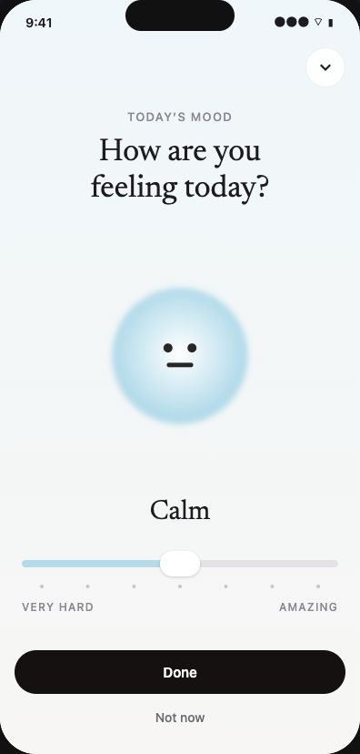
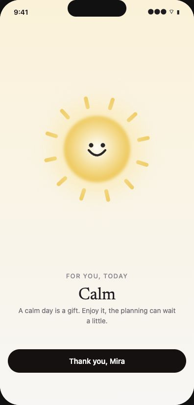

Made for the bride
Less to juggle.
More to look forward to.
I designed Mira to make wedding planning faster and easier, with a personalized timeline, small steps and encouraging progress feedback. Motion brings the interactions to life, from completing a task to celebrating a milestone.
Everything in one plan
The details that
make the day yours.
Manage the budget, guests, invitations and seating, and plan the bachelorette. The planner keeps the next step close, while Mira AI helps organize tasks and understand where the money goes.




Mira AI
A little help.
A clearer next step.
Ask what to do this week, how the budget is looking or how to break a big task into smaller ones. Mira is designed to use the bride’s plan to suggest practical actions and ways to save, with changes reviewed before they’re applied.


A moment for you
How do you
feel today?
A gentle check-in, a little encouragement and a music recommendation to brighten the day. Planning should leave room for the person behind the wedding.


Free to start
Plan freely.
Choose the extras you need.
The core planner is free. Invitations, seating and Mira AI are premium features, with a monthly subscription or a per-event option. Budgeting and bachelorette planning bring more of the bride’s preparations into one place.
Ad-free by design, with simple journeys that keep the bride focused on organizing and planning.
How I’m building it
From Figma screens
to a working prototype.
I started by designing a few key screens in Figma, then moved into Claude to research, explore ideas and shape the experience. Working with Codex, I turned those ideas into an interactive prototype and kept refining the journeys.
Mobbin Pro and 66design informed UX improvements and motion references. I make the design decisions, try them in the prototype and iterate as Mira takes shape.
Work in progress
Try the experience.
I designed and built this interactive prototype to explore the journeys, personalization and motion. It uses sample data and simulated AI and purchases.
Click around the prototype